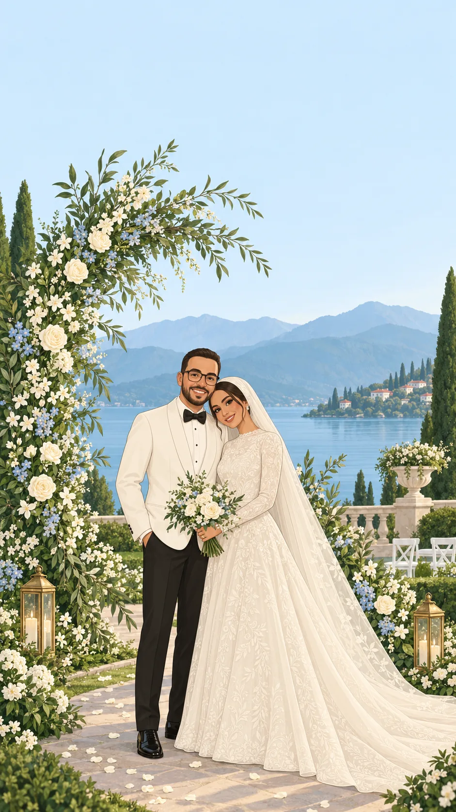

دعوة زفاف
اسم العريس اسم العروس
—
—
بطاقة دعوة
—
أهل العريس
—
أهل العروس
—
اكشفوا الموعد
مرّري إصبعكِ على المربّعات
—
اليوم
—
الشهر
—
السنة
بقي على الفرحة
00يوم
00ساعة
00دقيقة
00ثانية
اليوم يوم الفرح 🤍
برنامج الحفل
الموقع
—
—
—
—
اضغطي لفتح الموقع الموقع على الخريطةملاحظات
—
—
—
للاستفسار والتأكيد
—
اتصالاحفظ الموعد ❀
كانون الأول 2026
الجمعة
18
الساعة السابعة مساءً
📲 أضِف الموعد إلى تقويم هاتفك بضغطة
تأكيد الحضور
يسعدنا تأكيد حضوركم
كلمات المهنّئين ❀
أ
أم محمد
ألف مبروك 🤍 بالرفاه والبنين إن شاء الله، فرحتكم فرحتنا
س
سارة
عقبال ما نفرح بيكم بأحلى المناسبات، دعوة بغاية الذوق 😍
ح
حيدر
مبارك الزواج، الله يجعل أيامكم كلها أفراح
ن
نور الهدى
بيت جديد عامر بالمحبة إن شاء الله، ألف مبروك
أ
أبو علي
الله يبارك لكما ويبارك عليكما ويجمع بينكما في خير